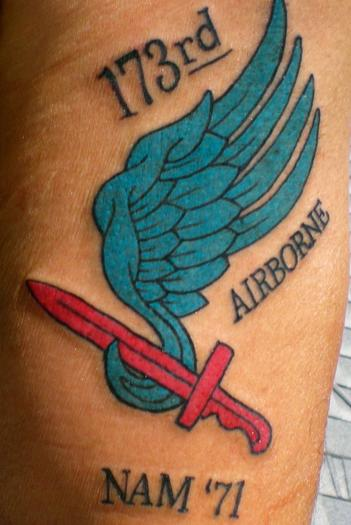

The titles of my three books appear separately within the drop down boxes. On those individual pages a synopsis is posted for each novel.
The first novel is Slipstream Portal Of Laundry-World, my latest work. Due to its wide compass of subject matter, its complex structure of tracing history and myth into contemporary times, presenting a traditional abbreviated outline would have been an injustice. Add the substantial and relevant background narration interwoven into its plots and subplots lends the decision to enhance the summary a no-brainer.
The drawings of four new characters in Slipstream Portal Of Laundry-World are posted between breaks in the text. On the Last House On The Block page, my second novel, two prominent characters of that story are posted. The two characters on the home page, Dr. Panda Head and Professor Dos Zetas, also made their first appearance in Last House On The Block. All characters mentioned come together in Slipstream Portal Of Laundry-World.
Please note, Slipstream Portal Of Laundry-World is loosely a sequel to Last House On The Block, due to a carryover of the characters and not the storyline per se. That said, Slipstream Portal Of Laundry-World is a stand alone read. I would recommend Last House On The Block after Slipstream Portal Of Laundry-World should you find my style and literary flair appealing.
Lastly, Road Scholars, my first book, stitched together from an evolving manuscript spread over thirty years, has been referred to as a ‘period piece’. That is owing to its timeline of a few months in late 1973. In many respects it is, however, let nothing be lost on its timeless message about returning veterans of war.
A certain number of combat vets from all wars find it problematic to assimilate seamlessly back into mainstream society. The unfortunate military personnel who suffer disfigurement and amputations are glaring wounded warriors; their condition is readily recognized and generally receives deserving care along with public acknowledgement for their sacrifices. That doesn’t necessarily mean their integration back into society is not without painful and troubling adjustments. Many manage to overcome their disabilities and become productive, gratified citizens. Sadly the fate of the rest is akin to damnation through no fault of their own.
Yet other veterans carry wounds and scars not of the body but of the mind. Their booty of war is nothing less than suffering from the psychological impairment PTSD. If war doesn’t take your life or limbs, it could very well take your mind. And while you may leave the battlefield…the battlefield may never leave you.
For Nam vets, if you add in the reproachful public opinion and scorn endured upon their ‘homecoming’, one could clearly acknowledge that their welcoming parade was rained on, but you’d only be half right…their parade was pissed on.
Additionally, a smaller subset of surviving veterans, whether victims of PTSD or not, had manifested a less than conventional mindset in the aftermath of their season in hell.
Their values and priorities in life were seriously upended as a result of combat. Dodging near death experiences, repeatedly for months on end while witnessing ninety-nine blood drenched shades of causalities, fostered a cause to retaliate against the system that exploited their patriotism in the worst way…fighting a senseless war with no viable plan to succeed.
Some joined outlaw bike gangs lashing out in defiance. Others favored the counter-culture movement to facilitate structured protest and or rebellion. Compounded with antipathy, reconciliation with the mainstream that cursed them as losers was not an option; that Albatross around their neck only exacerbated the necessity to make a socio-political statement that was contrary to community standards.

Finally, a rare breed of returning soldiers pursued healing and purpose upon another level altogether. Dissatisfied with the ways of the world, they sought a new world.
These once naïve boys became enlightened men. Forged in the furnace of battle they saw not the glory of war but the folly and refused to buy back into the establishment; that dog didn’t hunt anymore. Escaping without delay irrational, misguided ideology that brought them to the brink of madness was utmost priority. There was no time for jobs, family, college or anything but to make a mad dash down the highway like a wrongly convicted fugitive in search of sanctuary from the clutches of a broken system.
Are they misfits, malcontents, bohemian renegades, unabashed gonzo anti-heroes??? Absolutely, and they wear it like a badge of honor.
These ex-troopers are existential desperados compelled to blaze their own path to find unconditional fulfillment on their terms; which makes it a transcendent odyssey besides a worldly one.
The quixotic roadside philosophers of Road Scholars revel in their own brand of joie de vivre as they journey to the far side of the horizon, home of their elusive endpoint that does not exist. Not surprisingly, like gypsies and butterflies, they find the nomadic lifestyle is the essence of freedom.
In due time they will become conscious of the fact that their destination is not a place on a map but somewhere in their minds, meanwhile they continue the pilgrimage seeking the fabled vista that reveals meaning and purpose for being.
The Road Scholars' tale is boldly adventurous, drug addled, violent, profane, comic, surreal, brazen hyperbole and punctuated with slipstream encounters. In spite of those qualities, or rather because of them, it is a captivating saga that celebrates the tribal bonds of veterans, undying friendship and uncommon wanderlust.